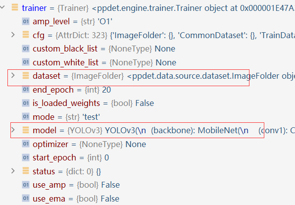
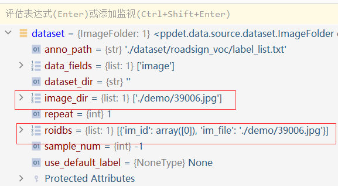

PaddleDetection使用指南
PaddleDetection使用指南
PaddleDetection是和PaddleSeg类似的一个框架，不过它聚焦于目标检测领域。由于都是基于PaddlePaddle框架同一个公司开发的，所以这2者在架构上有相似之处，但也有区别。想要到时候用他来科研、缝合模型的话必须得对它的源码有深入的了解。
一、PaddleDetection能用Config文件来配置如何训练的原理
PaddleDetection实现读取config文件来创建模型、数据集主要是通过以下模块：
1 | from ppdet.core.workspace import load_config, merge_config, global_config |
和PaddleSeg一样，它的基本原理是：把能用Config文件创建的类全部先注册到一个全局变量里面，然后解析.yaml配置文件，如果配置文件中的数据类型是被注册了的，则根据配置文件创建相应的实例，否则就报错。
1.全局配置文件
PaddleSeg是用了5个ComponentManager类的全局变量，而PaddleDetection仅用了一个全局变量global_config，并且实际使用时并不直接用该变量，而是用了个局部变量cfg，这两者应该是一样的。所有被注册的类都会被添加到这个配置文件里占位，如果config文件里包含了该对象，则会被具体赋值。
2.Trainer类
这个类包含了如下功能：
根据全局配置文件
cfg中存在的变量，**创建具体的实例**——这部分功能对标PaddleSeg的Config类训练、加载权重、预测等等….
这个类应该是PaddleDetection的核心类，和PaddleSeg的Config类一样，创建的具体模型的实例作为它的成员变量
3.学习率
PaddleDetection中提供的默认配置一般是采用8卡训练的配置，配置文件中的batch_size数为每卡的batch size，若训练的时候不是使用8卡或者对batch_size有修改，需要等比例的调小初始learning_rate来获得较好的收敛效果。
比如单卡训练时，学习率直接除以8.
二、不借助Config文件来创建模型
参考链接：docs/advanced_tutorials/MODEL_TECHNICAL.md · PaddlePaddle/PaddleDetection - Gitee.com
1 | ppdet/modeling/ |
2.1创建对象
PaddleDetection中所有模型相关的文件都如上所示，如果我们要直接创建一个现有模型的实例，那么直接去对应的.py文件，看他的构造函数，再结合已有的config文件中的相关形参是怎么写的，即可创建.注意，Config文件里形参可能没有num_classes，因为这个变量是共享变量，被定义在__shared__里面，手动创建模型时记得加进去。
如果某个模型的类有__shared__这个成员变量(list)，那么该类的实例能从cfg里直接得到__shared__内所含变量。
1 | model = YOLOv3(backbone=BackBone, |
2.2前馈计算
PaddleDetection中定义的模型的前馈计算和原始Paddle和PaddleSeg区别很大。PaddleDetection中定义的模型的前馈计算:model(input)的输入必须是字典，不能是自己创建的一个随机张量。因为PaddleDection里面的数据集类的__getitem__ 返回的就是一个字典。输入的图片的那个张量被封装到了该字典中。
三、不借助Config文件来读取数据集
参考链接：
docs/advanced_tutorials/READER.md · PaddlePaddle/PaddleDetection - Gitee.com
1 | ppdet/data/ |
1.DataSet相关
PaddleDetection定义了一个DetDataSet的新的数据集基类，相比于原生DataSet更加适合目标检测任务。其他的数据集类必须继承这个基类，且重写parse_dataset函数(类似于C++中重写纯虚函数)
parse_dataset()根据数据集设置的数据集根路径dataset_dir，图片文件夹image_dir，标注文件路径anno_path取出所有的样本，并将其保存在一个列表roidbs中，每一个列表中的元素为一个样本xxx_rec(比如coco_rec或者voc_rec)，用dict表示，dict中包含样本的image, gt_bbox, gt_class等字段。COCO和Pascal-VOC数据集中的xxx_rec的数据结构定义如下：
- 注意ImageFolder的
image_dir必须是个列表。列表中每一项是一个图片的路径比如./123.png

2.Dataloader相关
PaddleDetection也新定义了Dataloader类，这里被称为Reader
2.1
PaddleDetection中数据集类不能单独使用，必须结合Dataloader一起用，因为dataset的一部分初始化在dataloader的初始化中进行。。。如果不用dataloader，dataset的__getitem__也不能返回一个完整的字典。
2.2dataloader的初始化
PaddleDetection中，需要先实例化一个Reader对象，在调用其__Call__的成员函数，才会返回真正的dataloader
1 | kwargs = { |
``
注意：
- PaddleDetction中，dataloader的transforms必须以list形式输入，且list中具体的transform必须以dict的形式输入。因为dataloader会调用一个
Compose函数，这个函数对把输入当dict处理。